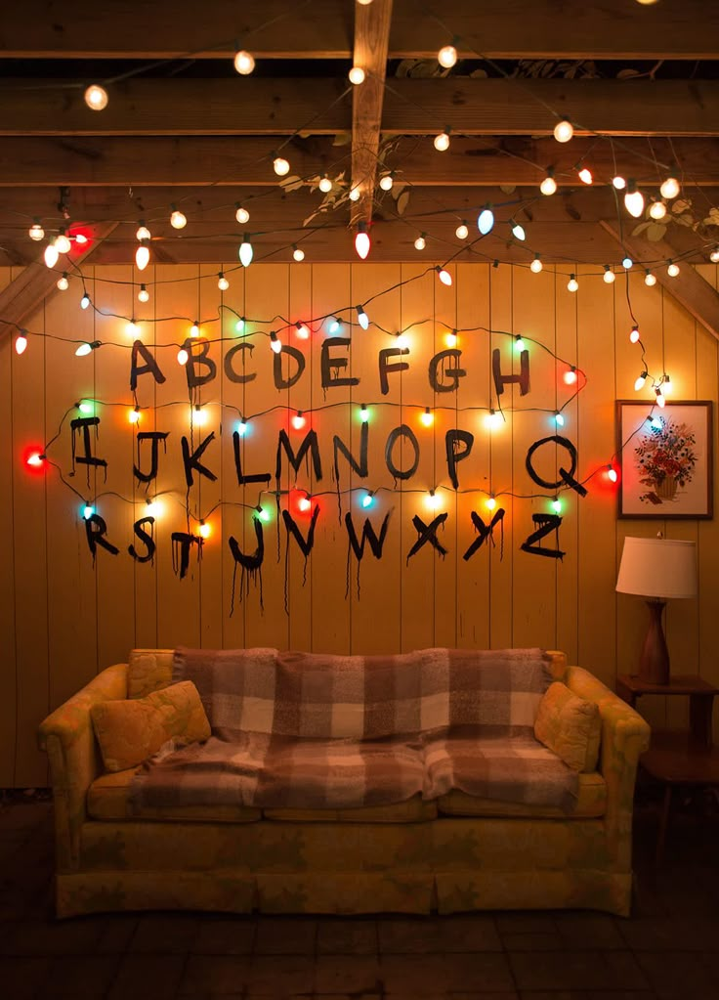

A lo largo de sus temporadas, Stranger Things desarrolla una historia que combina ciencia ficción, terror y amistad.
Cada temporada presenta nuevos conflictos, pero todos están conectados por el misterio del “Upside Down” y los experimentos secretos.
A medida que avanza la serie, los personajes no solo deben enfrentarse a estos peligros sobrenaturales, sino también a conflictos personales,
cambios emocionales y el crecimiento propio de la adolescencia.
La historia logra equilibrar momentos de tensión con escenas de amistad, humor y compañerismo.

La historia comienza con la misteriosa desaparición de Will Byers, lo que genera preocupación en todo el pueblo. Sus amigos inician una búsqueda por su cuenta y en el camino encuentran a Eleven, una niña con poderes especiales que escapó de un laboratorio.
A medida que investigan, descubren que existe una conexión entre la desaparición de Will, el laboratorio y una criatura proveniente del “Upside Down”.
Finalmente, logran enfrentarse a esta amenaza, aunque dejan abierta la puerta a futuros conflictos.
Tras lo ocurrido, Will regresa, pero no está completamente a salvo. Comienza a experimentar visiones y a sentir la presencia de una entidad mucho más poderosa: el Mind Flayer.
Esta criatura intenta expandirse al mundo real controlando a otros seres. El grupo vuelve a unirse para cerrar el portal y proteger a Hawkins, mientras Eleven sigue desarrollando sus poderes y entendiendo su pasado.
La historia avanza con un tono más dinámico y se centra en el nuevo centro comercial Starcourt.
Sin embargo, detrás de esta aparente normalidad, se llevan a cabo nuevos experimentos que reabren el portal al “Upside Down”.
Una amenaza más fuerte surge cuando el enemigo toma control de personas del pueblo para formar una criatura más grande y peligrosa. Los protagonistas deberán trabajar juntos una vez más para detenerlo.
En esta temporada, la historia se vuelve más oscura y compleja. Aparece Vecna, un nuevo villano con habilidades psicológicas que ataca a sus víctimas desde la mente.
A lo largo de los episodios se revelan secretos importantes sobre el origen del “Upside Down” y la relación de Eleven con estos eventos.
Además, los personajes se encuentran separados en distintos lugares, lo que hace que la lucha sea más difícil y desafiante.
La quinta temporada funciona como el cierre de la historia. Después de los eventos anteriores, Hawkins queda gravemente afectado y la conexión con el “Upside Down” es más fuerte que nunca.
El peligro ya no está oculto, sino que comienza a expandirse directamente sobre el mundo real.
Los protagonistas deben reunirse una vez más para enfrentar la amenaza definitiva.
En esta etapa, la historia se centra en la batalla final contra las fuerzas del “Upside Down”, especialmente contra Vecna, cuyo plan representa un riesgo total para la humanidad.
Además, se profundizan las relaciones entre los personajes y se cierran varios arcos importantes, mostrando cuánto han cambiado desde el inicio de la serie.
La temporada combina momentos de mucha tensión con otros más emocionales, marcando el final del camino para el grupo y resolviendo los principales
misterios que se desarrollaron a lo largo de toda la serie.